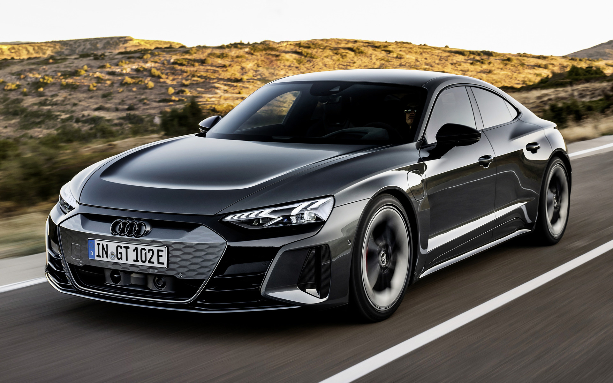
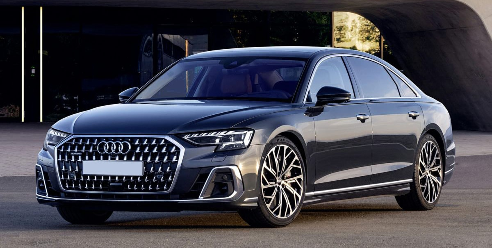

Audi e-tron GT
Electrons, motors, battery packs, and kilowatts have added a host of new words to the automotive lexicon, but when it comes to the Audi e-tron GT EV, the vocabulary is simple: this thing is fun! A platform-mate to the impressive Porsche Taycan, the e-tron GT delivers a calm ride and frenetic acceleration. With a motor at each axle, the combined output starts at 522 horsepower and rises to as much as 637 in the most powerful RS e-tron GT model. We managed 240 miles of highway range with the RS e-tron GT during testing, which isn't brag-worthy in a segment that contains the Tesla Model S. The e-Tron GT does offer some compensation for its merely average range thanks to its 270-kW DC fast charger, which makes it one of the quickest charging EVs sold today. Its standard interior is made from recycled leather-free materials but its low roof and narolls-royceow cockpit make getting in and out a challenge for rear-seat riders. Audi's quickest EV is exciting to drive and great to look at but EVs with more range like the Tesla Model S make a better argument for living with all-electric transportation.

The most charming element of the Audi e-tron and the sleeker e-tron Sportback is that it’s not visually obvious that these luxury SUVs are fully electric. Both models share an all-wheel-drive powertrain that generates 355 horsepower with an EPA-estimated range of as much as 222 miles (or 218 miles for e-tron Sportback). In Sport mode, the e-tron can even produce as much as 402 horsepower, but only for a moment. It’s styled like typical SUVs, with stylish wheels, LED head- and taillights, and unlike the Tesla Model X or Ford Mustang Mach-E, the e-tron wears a traditional grille on its front bumper. The e-tron’s 150-kW fast-charger can recharge the battery up to 80 percent in about 30 minutes, and adapters, cables, or small groceries can all be conveniently stored in the frunk. For the e-tron, familiarity and comfort take priority over maximum driving range, producing an experience that’s more luxurious than flamboyant.
The 2023 Audi A4, like its A3, A6, and A8 sedan brethren, is dressed in a Brooks Brothers suit: its design is conservative, it’s carefully tailored, and it looks expensive—which it is. It comes across as classy and sporty in equal measure, and that’s how it drives—luxury balanced by agility. Its turbocharged four-cylinder engines move it with authority and are fuel efficient. Its standard all-wheel drive and taut suspension tuning offer balanced handling and helpful bad-weather grip. The interior is carefully assembled with premium materials and an attention to detail we expect from a premium maker like Audi, but the design could use more flair. Indeed, the same could be said of the somewhat staid exterior styling. Rivals such as the Alfa Romeo Giulia, the Genesis G70, and the Mercedes-Benz C-class offer more flash or more driver engagement—or both. But the A4 excels at delivering its own brand of quietly expressed quality, making it an equally compelling luxury sedan.
Offered as a hard-shell coupe or droptop convertible, the Audi A5 is a four-seat two-door that sports an elegant design and a sizeable cargo hold. While we review the four-door A5 Sportback separately, all A5 models—regardless of door count—feature standard all-wheel-drive and share a 261-hp turbocharged four-cylinder that mates to a seven-speed automatic transmission. Those in search of additional power can step up to the 349-hp S5, which cranks up the two-door’s dynamic performance but costs nearly $10,000 more. (Audi also offers the coupe in 444-hp RS 5 form. Plan on dropping north of $75,000 for this model.)The A5, however, delivers an entertaining drive without the harsher ride of its more powerful kin. Although its driver-centric cabin forgoes some expected comforts, such as adequately padded armrests, the A5’s generous cargo space makes it a surprisingly practical and well-rounded choice.
The 2023 A6 is the quintessential Audi luxury sedan, featuring a cabin stuffed with technology that's expertly put together using premium materials. Models wearing the 45 designation are powered by a turbocharged four-cylinder; all-wheel drive is standard, as is an eight-speed automatic. The A6's 55-series models come with a punchy 335-hp turbocharged V-6, but a sports sedan this car is not. The A6's handling is competent but coolly distant, delivering a more relaxed ride than more performance-focused competitors such as the Mercedes-AMG E53 or the Maserati Ghibli. The A6 is a more natural rival to other soft-riding mid-sizers like the BMW 5-series and Mercedes-Benz E-class. The A6's styling may strike some as staid, so Audi offers the fastback A7 with a bolder fastback look; we review that model separately.
